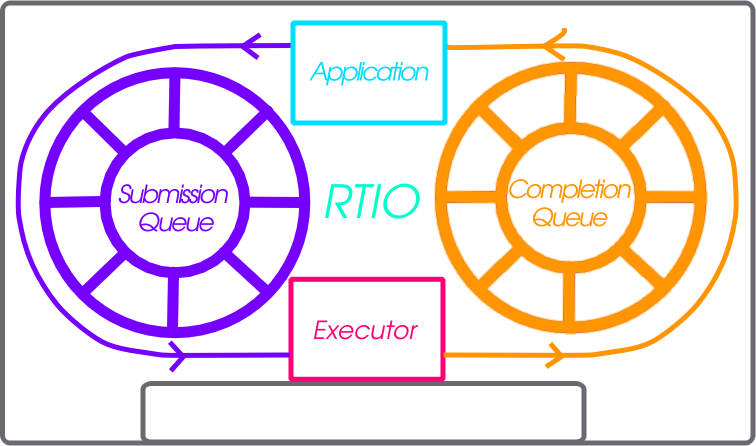

实时 I/O（RTIO）


RTIO 提供了一个框架，用于以事件驱动的 I/O 执行异步操作链。本节介绍 RTIO API、队列、执行器（executor）、iodev，以及与外设配合使用的常见模式。
RTIO 的操作和 API 在很大程度上借鉴了 Linux 的 io_uring，因为该 API 与硬件传输队列以及 DMA 传输列表之类的描述方式非常契合。
问题
目前，应用程序如果想在 Zephyr 中执行复杂的 DMA 或中断驱动操作，就需要直接了解硬件及其工作方式。DMA API 并不了解其他 Zephyr 设备以及它们之间的关系。
这意味着要实现复杂的音频、视频或传感器数据流，要么需要直接了解硬件，要么只能使用基于 DMA 控制器的有漏洞的抽象。两者都不理想。
要实现异步操作，尤其是使用 DMA 时，需要的是对要做什么的描述，而不是通过 C 代码和回调直接执行操作。要支持带优先级的通道、传输序列等 DMA 功能，仅有一个简单的描述列表是不够的。
使用 DMA 和/或中断驱动的 I/O，不应决定调用是否阻塞。
灵感来源：io_uring 简介
最好不要重复造轮子（这里是“环”），而 Linux 内核中的 io_uring API 提供了一个成功的模型。在 io_uring 中，有两个无锁环形缓冲区，作为内核与用户态应用程序之间共享的队列。一个队列用于提交条目，这些条目可以链接起来并刷新，以创建并发的顺序请求；另一个队列用于完成队列事件。执行许多操作实际上只需要一个系统调用，即 io_uring_submit 调用。如果给定了要等待的操作数量，该调用可能会阻塞调用者。
这个模型很好地对应了 DMA 和中断驱动的传输。以异步方式执行一系列操作的请求，与硬件通常的工作方式直接对应：硬件使用中断驱动的状态机，可能涉及总线控制器和 DMA 控制器等多个外设 IP。
提交队列
提交队列（submission queue，sq）描述以并发链形式执行的操作。
例如，设想一次典型的 SPI 传输：先写入一个寄存器地址，然后从中读取。操作序列可能如下：
片选
使能时钟
将寄存器地址写入 SPI 发送寄存器
从 SPI 接收寄存器读取数据到缓冲区
禁用时钟
取消片选
如果这个操作链中的任何一步失败，就放弃。其中一些操作可以包含在一个设备抽象中，该抽象知道读或写隐含着要设置时钟和片选。请求的事务性也需要以某种方式体现。在上述操作中，读操作的数据量也许足够大，适合用 DMA 完成，这就需要了解如何设置该设备特定的 DMA 来实现。
上述操作序列在 RTIO 中表示为一个提交队列条目（submission queue entry，sqe）链。链接的方法是在 sqe 中设置一个标志位，表示下一个 sqe 必须等待当前 sqe 完成。
由于片选和时钟对于某个特定的 SPI 控制器及总线上的设备是公共的，它们被包含在 RTIO 所称的 iodev 中。
针对同一个 iodev 的多个操作会按给定顺序尽快执行。如果两个操作链在不同位置使用同一个设备，一个链可能需要等待另一个链完成。
完成队列
为了知道 sqe 何时完成，存在一个完成队列（completion queue，cq），其中包含完成队列事件（completion queue event，cqe）。sqe 完成后会产生一个 cqe 并推入 cq。cqe 的顺序可能与 sqe 的顺序不同。不过，sqe 链能够保证顺序以及失败的级联传递。
也可以采用其他方案，但完成队列是 io_uring 及其他类似操作系统 API 中久经验证的做法。
执行器
RTIO 执行器是一个低开销的并发 I/O 任务调度器。它确保特定的请求标志产生预期的行为。它接收一个提交列表，并按顺序逐一处理。多种标志可以改变处理提交的方式：可以用标志构成按顺序执行的提交链、事务性的提交集合，或者创建多次触发（持续产生数据）的请求。
IO 设备
将提交队列条目（sqe）转换为完成队列事件（cqe），是实现 iodev（IO 设备）API 的对象的工作。该 API 通过 iodev 提交 API 调用接收请求。IO 设备负责处理其内部的提交队列，并将其转换为完成事件。实际上，每个 IO 设备都可以看作一个独立的、事件驱动的类 actor 对象，接收一个永不结束的 I/O 类请求队列。iodev 如何完成这项工作由 iodev 的作者决定，也许整个操作队列都可以转换为一组 DMA 传输描述符，这意味着几乎所有实际工作都由硬件完成。
取消
可以取消已排队的操作，但不保证成功。如果 SQE 尚未开始，调用 rtio_sqe_cancel() 很可能会移除该 SQE，使其永远不会运行。但如果 SQE 已经开始运行，取消请求将被忽略。
内存池
在某些情况下，读请求可能并不知道会产生多少数据。或者，读取方可能在处理来自多个 IO 设备的数据，而这些数据的频率无法预测。这些情况下，为进行中的读请求绑定内存可能很浪费。使用内存池时，读取所需的内存由 iodev 从与该读请求关联的 RTIO 上下文的内存池中分配。可以使用 RTIO_DEFINE_WITH_MEMPOOL 创建这样的 RTIO 上下文。它可以创建一个带有专用“内存块”池的 RTIO 上下文，供 iodev 使用。下面的代码片段设置了一个带内存池的 RTIO 上下文。该内存池有 128 个块，每个块大小为 16 字节，数据按 4 字节对齐。
#include <zephyr/rtio/rtio.h>
#define SQ_SIZE 4
#define CQ_SIZE 4
#define MEM_BLK_COUNT 128
#define MEM_BLK_SIZE 16
#define MEM_BLK_ALIGN 4
RTIO_DEFINE_WITH_MEMPOOL(rtio_context,
SQ_SIZE, CQ_SIZE, MEM_BLK_COUNT, MEM_BLK_SIZE, MEM_BLK_ALIGN);
需要读取时，调用者只需将对 rtio_sqe_prep_read() （接受一个缓冲区指针和长度）的调用替换为对 rtio_sqe_prep_read_with_pool() 的调用。iodev 只需做少量修改，即可同时支持预分配的数据缓冲区和内存池。读取就绪时，iodev 不应直接从 rtio_iodev_sqe 获取缓冲区，而应像下面这样调用 rtio_sqe_rx_buf() 获取缓冲区及其大小：
uint8_t *buf;
uint32_t buf_len;
int rc = rtio_sqe_rx_buff(iodev_sqe, MIN_BUF_LEN, DESIRED_BUF_LEN, &buf, &buf_len);
if (rc != 0) {
LOG_ERR("Failed to get buffer of at least %u bytes", MIN_BUF_LEN);
return;
}
最后，使用者可以通过 rtio_cqe_get_mempool_buffer() 访问分配的缓冲区。
uint8_t *buf;
uint32_t buf_len;
int rc = rtio_cqe_get_mempool_buffer(&rtio_context, &cqe, &buf, &buf_len);
if (rc != 0) {
LOG_ERR("Failed to get mempool buffer");
return rc;
}
/* Release the cqe events (note that the buffer is not released yet */
rtio_cqe_release_all(&rtio_context);
/* Do something with the memory */
/* Release the mempool buffer */
rtio_release_buffer(&rtio_context, buf);
适用场景
RTIO 适用于需要并发或批处理式 I/O 流的场景。
从驱动/硬件的角度看，该 API 支持批量处理 I/O 请求，而且可能是以最优的方式。例如，对同一个 SPI 外设的许多请求可能完全转换为硬件命令队列或 DMA 传输描述符，这意味着硬件可能承担比以往更多的工作。
每个 RTIO 上下文和 iodev 都有少量开销。可以将这一开销与为每个并发 I/O 操作使用一个线程、或为每个外设使用自定义队列和线程的开销相比较。RTIO 的开销要低得多。
支持的总线
要检查某条总线是否原生支持 RTIO，可以查看其驱动 API 实现：如果驱动实现了总线 API 的 iodev_submit 函数，则支持 RTIO。如果驱动不支持 RTIO API，它会将提交函数设置为 i2c_iodev_submit_fallback。
I2C 总线有一个默认实现，让应用程序在厂商实现提交函数之前也能使用 RTIO 工作队列。借助该队列，任何未实现 iodev_submit 函数的 I2C 总线驱动都会将请求交给一个工作项处理，由它执行阻塞式 I2C 传输。要更改池的大小，请为 CONFIG_RTIO_WORKQ_POOL_ITEMS 设置不同的值。
API 参考
- rtio